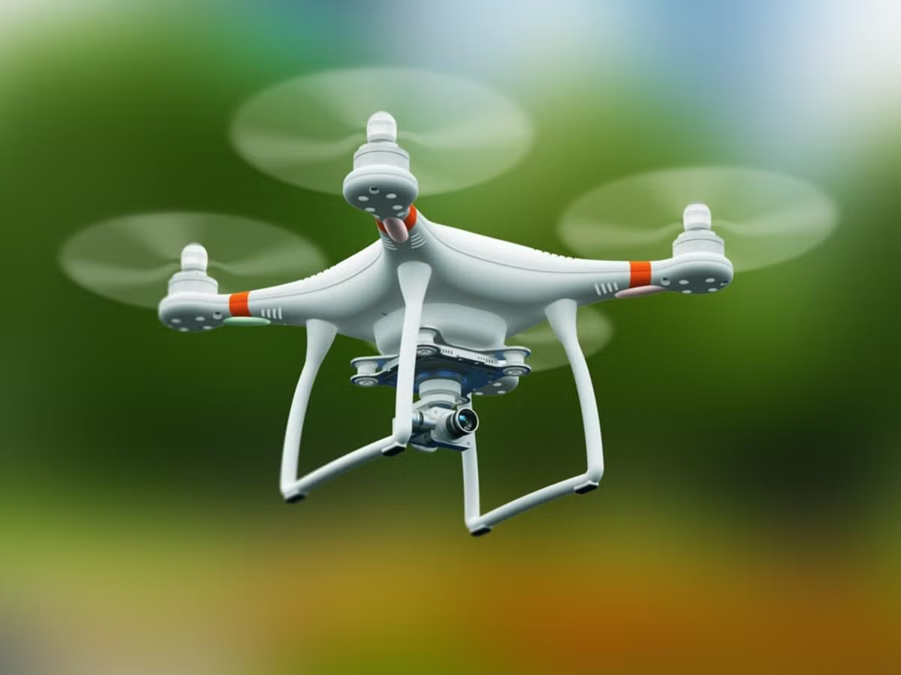

Soumik Das
M.Tech Student at Jadavpur University
Researching UAV Systems, FANETs, GPS Spoofing Detection, Cybersecurity and Recommendation Systems.
Download CV Contact

Researching UAV Systems, FANETs, GPS Spoofing Detection, Cybersecurity and Recommendation Systems.
Finalizing M.Tech in Distributed and Mobile Computing at Jadavpur University, with a strong foundation in Computer Science and Engineering from Adamas University. Served as a Research Fellow at Dipartimento di Scienze Ambientali, Informatica e Statistica, Università Ca’ Foscari Venezia (2025) and also as a Research Intern at the School of Mobile Computing and Communication, Jadavpur University (2023). Passionate about advancing in AI, machine learning and research, particularly in unmanned aerial vehicles (UAVs) and recommendation systems. Eager to contribute to innovative projects in drone safety, security and optimization. Committed to exploring emerging technologies and collaborating on impactful research to drive real-world solutions in cybersecurity and autonomous systems.

Cyber Domain Threats, Risk Analysis
GPS Spoofing
Parameter Tuning for optimization
Accepted at the 7th International Conference on Frontiers in Computing and Systems (COMSYS 2026).
Research article published in Expert Systems with Applications (Elsevier).
View PublicationFormer Research Fellow at Università Ca' Foscari Venezia, Italy, working on distributed GPS spoofing detection in UAV swarms.